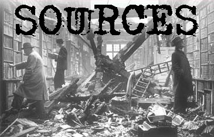

If you're interested in the topics covered by this website (forgotten places, abandoned buildings, old cemeteries, ghost towns, hauntings) then you'll probably be interested in the material assembled in this section. In some cases I've provided a review and/or purchasing information. I've divided it into sections by media; click on one to visit its page. If you know of anything that should be added to this list, please let me know.
Back
forgottenohio@yahoo.com